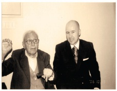

13
Geleceğin girişimcisine hikâyeler...
İnsanlar sürekli kendilerini geliştirmeliler. Özellikle erken yaşlarda karşılaştığınız doğru rol modellerini hayatınız boyunca unutmanız mümkün değil. Bu bölümde sizlere, örnek aldığım doğru davranış modellerini gerçek hikâyeleriyle beraber anlatıyorum. Sizlere de ışık tutması temennisiyle...
Herkes Girişimci Olmak Zorunda Değil
Size daha önceki bölümlerde anlattığım ilkokuldaki taş hikâyesinin devamı var: Aradan zaman geçti, Serdar kolejlere hazırlık sınavını kazandı ve özel bir okula gidiyor. Ben de Çapa Ortaokulu’na başladım. Ailem dil meselesine çok önem veriyor, haftasonları Cumartesi-Pazar da İngilizce kursuna gidiyorum. Serdar kendi okulunda hazırlık okumasına ve çok çalışkan olmasına rağmen kursa geliyor, kursta aynı sınıftayız.
O sıralarda kalem arkadaşları revaçta, pen friend; 15 lira vererek 15 pen friend adresi buldum, 150 liraya bulamayanlara sattım. Serdar da alıcılar arasında. Dikkatinizi çekerim, ben hep tedarikçi konumundayım, Serdar sürekli talep ediyor, hep müşteri. Ben Serdar’ın İngilizce öğrenmesine böyle böyle büyük destek verdim.
Aradan zaman geçti, mezun olduk, Serdar Boğaziçi Üniversitesi İnşaat Fakültesi’ni kazandı, ben ise İngilizce Öğretmenliği bölümünü. Yolumuz yine aynı okula düştü. Ben, bir yandan okula gidiyorum, bir yandan Laleli’de seyahat acentesinde çalışıyorum; Serdar bir yandan öğrenciliğini sürdürüyor, bir yandan da gitar çalıyor. “Baybars” dedi bir gün, “senin Bulgaristan’a gidip gelen müşterilerin vardır, rica etsem bana bir gitar getirtebilir misin?”
“Memnuniyetle...” Serdar’a hem döviz buldum, hem de o parayla Bulgaristan’dan gitar getirttim. Serdar’ın da annesi öğretmendi, benim de annem öğretmendi. Nihayetinde, ilkokuldan beri aynı sıralarda bulunmuş iki ilkokul öğretmeni çocuğunun aynı mekânlarda geçen hikâyesini anlatıyorum. Ama bu iki insanın geçen zamanda rolleri değişmiyor, biri sürekli bir şeyler satıyor, diğeri sürekli bir şeyler alıyor. Ya taş alıyor, ya adres, ya da gitar.
Sonuçta ne oldu? Ben Boğaziçi Üniversitesi İngilizce Öğretmenliği Bölümü’nü bitirdim, girişimci oldum. Serdar ise Boğaziçi Üniversitesi İnşaat Bölümünü bitirdi ve gitarist oldu. Derim ki, insanlar dünyaya bir kez geliyor, neden mutlu oluyorlarsa, hangi işi yapmak istiyorlarsa onu yapmalarında sayısız fayda var. Ben biliyorum ki Serdar en az benim yaptığım iş kadar yaptığı işten keyif alıyor. Önemli olan, insanların mutlu ve başarılı oldukları işleri yapmaları. Bunun sonucunda elde edilecek maddiyat çok gelip geçici bir şey. Bunun farkında olmak, işin para kazanma kısmını bir kenara itmek gerekiyor bence. Ben de hiçbir zaman yola para kazanayım diye çıkmadım, yüreğimin beni götürdüğü yere gittim. “Ne kaybederim ki?” diye yola çıktım.
Vitali Hakko’nun İğnesi
Bay Vitali Beyoğlu Güzelleştirme Derneği’ni kurmuş, belli bir noktaya getirmiş, Beyoğlu’nu Türkiye’nin merkezi yapma yolunda önemli adımlar atmış. Genel Kurul’da konuşma yapmaya geldi, 90 yaşındaydı, 39 derece ateşle hastaneden kalkıp gelmişti. Şoförünün yardımıyla zar zor yürüyordu. Bir saat boyunca Beyoğlu’nun geleceğini anlattı o şartlarda.

Bay Vitali 39 derece ateşle Genel Kurulda Beyoğlu’nun geleceğini anlatırken
O sahne gözümden hiç gitmiyor... Uzun lafın kısası, bazı girişimciler soruyor “ne zamana kadar?” diye. Ben de diyorum ki Hakko’yu hatırlayarak, “mezara kadar!”
Bay Vitali o konuşmadan sanırım 6 - 7 ay sonra vefat etti. Mezara kadar girişimci olmuştu...
* * *
Bir gün Bay Vitali ile telefonda konuşuyoruz; bir anda “ah” diye haykırdı. “Eyvah”, dedim, herhalde kötü bir şey oldu. “Paşam dedi” olanca sakinliğiyle, “vakit o kadar kıymetli ki seninle konuşurken aynı zamanda iğne oluyorum.”
Bir yandan tedavi oluyor, bir yandan iğne oluyor, bir yandan da benimle Beyoğlu’nu konuşuyor. Demek, girişimciliğin yaşı, hastalığı, tedavisi yok...
İnsan yedisinde girişimciyse yetmişinde de girişimcidir... Bu bazen ticari girişimle yürür, bazen sosyal girişimlerle. Yalnız bunlar iki ayrı kulvardır.
Girişimcilerin belli bir zaman sonra artık sosyal girişimcilikle ilgilenmesinin sebebi, girişimciliğin DNA’sına işlemiş olmasıdır.
Kendi işini kurmuş, kurduğu işi kendi kendine işler duruma getirmiş ama bir kenara çekilmek istemiyor, başka alanlarda devam ettiriyor girişimciliğini.
Yani bir yandan teknik direktörlük yaparken bir yandan da aklı sahada top koşturmada. Mevcut işleyen sisteme fazla müdahale etmek istemediğinden dolayı artan vaktini sosyal konulara ayırıyor.
Bay Vitali için bu, Beyoğlu Güzelleştirme Derneği’ydi. Ben de pek çok dernek kurdum, yöneticiliğini yaptım. Şimdi de Melek Yatırımcılar Derneği’nin başkanıyım.
Böylece sosyal girişimcilik görevini de yerine getirmiş oluyorum. Öte yandan girişimcileri, sosyal girişimlerdeki başarıları, ticari başarılarından daha fazla mutlu ediyor.
Sadece ticari başarı hiçbir zaman yeterli değildir. Dolayısıyla tüm girişimcilere bu iki kulvara birden odaklanmalarını öneririm.
Medyaya Fazlasını Söyleme
Bir gün, bir gazeteci aradı. Beyoğlu Güzelleştirme Derneği başkanıyım o sırada.
Ünlü birinin babası Beyoğlu’nda bir apartmanda yaşamış, hangi apartman olduğunu soruyor, haber yapacak. Bilse bilse Bay Vitali’nin kuzeni bilir...
Gazeteci arkadaşı telefonda bekleterek, bağlattım. O sırada gazeteci telefonda, diğer telefonun bağlanmasını beklerken, sohbeti sürdürüyor.
O sırada Beyoğlu’nda bir kapkaç problemi var, bir türlü engellenemiyor. İstiklal Caddesi’nin trafiğe kapalı olması da kapkaççıların işini kolaylaştırıyor. “Cadde trafiğe açılsa bu olaylar azalır” dedim sohbet arasında.
Diğer telefon bağlandı, aldığım bilgiyi telefonda bekleyen arkadaşa verdim.
Görüşme bundan ibaret. Ertesi gün gazetede bir haber; “Beyoğlu Güzelleştirme Derneği Başkanı İsyan Ediyor!”, “İstiklal Caddesi trafiğe açılsın yoksa kapkaçın önüne geçilemeyecek”, haber böyle.
Telefondaki sohbetimiz gazeteye haber olmuş, hâlbuki benim böyle bir beyanım yok, özel sohbetin haber olacağını düşünemiyorum.
Beyoğlu esnafı ayağa kalktı. Dernek bizim ekmeğimizle oynuyor dediler. Buranın trafiğe açılması da nereden çıktı, böyle bir proje var da haberimiz mi yok! Kıyamet koptu. Demek ki basınla konuşurken çok dikkatli olmak lazım.
Hasta Yatağında Fiyat Pazarlığı
Yeşilçam Sokağı’nın zeminini Hollywood’daki gibi düzenlemek istiyoruz. Caddeye, Yeşilçam yıldızlarının resimlerini döşeyeceğiz, bu taşlar da özel bir yöntemle yapılıyor.
Yönetim kurulu üyemiz Boğaziçi Üniversitesi Çevre Bilimleri Enstitüsü Başkanı Prof. Orhan Yenigün, kardeşinin Amerika’da bu konuda eğitim gördüğünü, kendisinden yardım alabileceğimizi söyledi.
Düşüncem şu: Beyoğlu’nun duayeni Vitali Hakko’dan başlayarak Beyoğlu’nu Beyoğlu yapan tüm kültür, sanat, siyaset ve iş dünyasının isimlerini fotoğraflarıyla beraber bu granitlere işleyerek; Beyoğlu’nda da aynen Hollywood’ta olduğu gibi bir şöhretler yolu / Walk of Fame yapmak.
Örnek bir uygulama yaptırdık. Maliyeti biraz yüksek. Bu projeye bir ana sponsor bulmam gerekiyordu.
Bu iş için de en uygun isim Bay Vitali idi. Ancak, tam da o günlerde Bay Vitali hasta oldu, acil, hastaneye kaldırdılar.
Örneği ona göstermem gerek, taşınması çok güç olmasına karşın yaptırdığım taşı aldım, hastanenin yolunu tuttum.
Hem geçmiş olsun ziyareti yapacağım, hem de taşı gösterip fikrini soracağım.
Arada da bir sponsorluk anlaşması yapacağım. Bu işin hastaneye denk gelmesi de iyi olmuştu, Bay Vitali hasta yatağında büyük ihtimal projeye sponsor olur diye düşünüyordum.
Taşı hastane odasına kadar taşıdık.
Başladım projeyi anlatmaya; ballandıra ballandıra anlatıyorum.
Lafın arasında projenin maliyetinden ve sponsorluktan bahsettim, en ideal ismin Vitali Hakko olacağını söyleyince Bay Vitali bir anda canlandı, yataktan doğruldu; söylediğim fiyatı çok yüksek bulmuştu.
Kendince bir değer belirleyip söyledi.
O fiyata o taşları yaptırmamız mümkün değil! Bay Vitali’nin bu tavrı da benim için iyi bir girişimcilik örneği oldu. Gerçek girişimci hasta yatağında bile gelir – gider analizini iyi yapabilen insandır.
Bana da ‘geçmiş olsun’ deyip, taşı geri götürmek kaldı.
Başkana “Başkanım” Demenin Erdemleri
Bizim milletimiz “Başkanım” demeyi çok sever. Ancak ben bu “başkanım” lafından da hiç hoşlanmıyorum.
Bir gün Başaran Ulusoy’u ziyarete gittim, kendisi TÜRSAB Başkanı, kendisine Başaran Abi diye hitap ediyorum.
TÜRSAB’a adım atar atmaz, her şeyin Başkan’la başlayıp bittiğini fark ettim. Zannedersin söz konusu olan Birleşik Devletler Başkanı! Ben, “Başaran Bey” diye hitap etmeye devam ettim.
Aradan zaman geçti, ben de Beyoğlu Güzelleştirme Derneği’nde “Başkan” oldum.
İstiklal Caddesi’nde gezerken, bir de baktım ben de “Başkanım” olmuşum, her gören “başkanım” diyor, başka bir şey demiyor.
Milletvekilleri gelecek, telefon ediyorlar, “Başkan, derneğinizi ziyaret edeceğiz” diyorlar. Bir de baktım ben de bu hitaba alışmışım.
Bir gün bir reklam ajansı sahibi geldi, Beyoğlu’nda bir reklam çalışması yapmak istiyor.
Konuşurken bana ‘Baybars Bey’ diye hitap ediyor; fark ettim ki bu hitaptan rahatsız oluyorum. İşte, insan psikolojisine çok güzel bir örnek daha! O yüzden girişimcilerimize şunu öneriyorum; bir insana herkes nasıl hitap ediyorsa siz de öyle hitap edin. Başka türlü hitapta bulunursanız, sırf bu yüzden sizi kara listeye alabilirler.
Başkansa başkan, müdürse müdür; hocaysa hoca; insanlar bu unvanlara bir noktadan sonra alışıyorlar.
Unutmamalı ki bizim ülkemizde apartman yöneticisi bile ‘Başkanım’dır!
Bu arada ben ise Başaran Bey’in kıymetini böylece anlamış oldum. Reklamcı bana ismimle hitap etti diye bozulmuştum ama Başaran Bey bana hiç bozulmamıştı.
Paranıza Değil, Burnunuza Güvenin
Paranın kokusunu almak için, parasız olmanız gerekir, para içinde yaşayanlar paranın kokusunu alamaz. Parası olmayan insanlar, paranın kokusunu, parası olanlardan daha iyi alır.
Girişimci paranın kokusunu iyi alan insandır. Ben de bu günlere paranın kokusunu alarak geldim. Yaptığım işlerde bu yeteneğimin etkisi çok büyüktür. Napolyon’a sormuşlar, “senin diğer insanlardan farkın ne?”
“Hiçbir farkım yok” demiş, “yalnızca ben, diğer insanlardan 5 dakika önce düşünürüm.” Benim de farkım budur, diğer insanlardan 5 dakika önce düşünürüm ve harekete geçerim. Başarıyı belirleyen de işte o 5 dakikadır.
Ulaşmak istediğiniz bir hedefiniz yoksa koşmazsınız, hatta yürümezsiniz bile. Girişimci ise kendine bir hedef koyan ve koşan kişidir. Parası olmayan hedef belirler, hedefi olan hedefe koşar.
Üniversiteye geldiğimde, pek çok arkadaşım okula lüks otomobillerle geliyordu, hiçbirini kınamadım, “batsın bu dünya” demedim. “Benim niye yok” dedim, “çalışır, kazanırsam benim de olur” diye düşündüm. Girişimciliğin şartlarından biri de budur; paranız varsa yatırım yaparsınız, bu farklı bir şey. Paranız yoksa iş fikrinizin peşinde gidersiniz, bu girişimciliktir. Para yönetiminin sadece sahibine faydası vardır, oysa girişimcinin topluma da faydası vardır. İş kurarak, insan çalıştırarak dışsal faydalar üretirsiniz.
Ahmet Çalık’ın Haberi Olmadan
Çalık Üniversitesi’ni Kurdum
Yeni Asır gazetesi, Ege bölgesinde çıkan bölgesel önemli bir gazete. Gazetenin binası, İzmir’in merkezinde, yeri şahane. Burası daha faydalı kullanılmalı, üniversite olmalı diye düşündüm. Bir şehir üniversitesi olsun, içinde iletişim fakültesi de olabilir. Bina Çalık grubunun, böylece bir medya grubuna sahip olan kuruma eleman da yetiştirir.
Binayı Çalık Üniversitesi yapmayı kafaya koydum. Bina benim değil, Ahmet Çalık’ı tanımıyorum, Çalık grubuyla hiçbir ilişkim yok, kendi kendime gelin güvey oluyorum.
Ortak bir tanıdık buldum, beni Ahmet Çalık’la görüştürdü. Projemi anlattım, çok heyecanlandı; anlaştık. Yüzde 60’ı onun, yüzde 40’ı benim, üniversiteyi ben kuracağım. Bana “Sen doğru girişimcisin, fikir çok güzel, üniversitenin yeri konusunu sonra tartışırız” dedi, kabul etti, el sıkıştık, teorik olarak da şirketi kurduk.
Anladım ki Ahmet Çalık tam bana göre insan. İş fikrini doğru bulunca atılmakta tereddüt etmiyor...
Fakat işleri o kadar yoğun ki bu yoğunluğun arasında yeni projelere odaklanması doğal olarak zor oluyor. Baktım iş uzuyor ama buna karşın şirketin ana sözleşmesi ortaya çıkmış durumda.
Aradan bir zaman geçti, Ahmet Çalık’tan bir haber yok, sürekli yurtdışında. Pazar günleri cepten konuşuyoruz, Pazartesi günü Ahmet Çalık'a ulaşabilirsen büyük başarı!
Baktım ki olmuyor, zaman kaybediyoruz, yeniden ortak dostumuzu aradım, biraz dert yandım. O da dedi ki, “27 Ekim’de Türkmenistan’ın Cumhuriyet Bayramı var, Türkmenbaşı’nın daveti üzerine Türkmenistan’a gidiyorum. Ahmet Bey de gelir, Türkmenistan’da yatırımları var, bari orada konuşur işi bağlarsın Ahmet Bey’le. Hem de sürpriz olur...”
Peki dedim, uçağa bindik Türkmenistan’a indik. VIP karşılanıyor bizim ortak dostumuz, Turizm Bakan Yardımcısı havalimanında bizi bekliyor.
Sabah 6’da indik, 9’da törenler başlıyor. Alıp bizi Başkanlık Sarayına götürecekler fakat bir türlü havaalanından çıkamıyoruz. Nedenini kısa zamanda anladık, o telaş içinde ben vize almayı unutmuştum...
Ahmet Çalık’la oturalım, Ahmet Çalık Üniversitesini kuralım derken, polisler havalimanı çıkışında etrafımı sardı. Beni tutuklayacaklar!
Beraber olduğum arkadaşım dedi ki, “Baybars Bey olmadan kesinlikle dışarıya çıkmam”. Polisler ısrar ediyor, “sizi otele götürelim, arkadaşınız sonra gelsin...” Mevzuu anlaşıldı, beni tutuklayacaklar.
Bunun üzerine bizi karşılayan Bakan Yardımcısı, Turizm Bakanını aradı, inanır mısınız, bakanın özel talimatıyla zar zor bana orada bir vize düzenlediler. Ben ancak Bakan talimatıyla ülkeye giriş yapabildim.
Saat tam 9’da Devlet Başkanı’nın arkasındaki sıralarda protokoldeki yerimizi aldık. Kafamı bir çevirdim, sağımda Ahmet Çalık oturuyor. “Sen burada ne arıyorsun” dedi şaşkınlıkla, olanları anlattım. “Bugün buraya gelene kadar bunca sıkıntı yaşadım, bu şirketi kuracaksak kuralım” dedim. Ahmet Beyle çok güzel bir gün geçirdik, bütün ekibiyle tanıştık. Ardından cumhuriyet kutlamalarına katıldık. Ahmet Çalık özel kutlama ekibindeydi.
Ondan sonra da bir daha Ahmet Çalık’ı göremedim. Dedim ki içimden, “artık bu son nokta. Bütün bunlara rağmen adım atılamıyorsa kovalamaya gerek yok.”
Bu girişimcinin nereye kadar ısrarcı olabileceğine en güzel örnektir. Ama Ahmet Çalık gibi iyi bir insanla beraber bir şeyler yapamamak da içimde uhde kaldı. Her şeyde bir hayır vardır diyerek, Ahmet Bey’i kovalamayı bıraktım.
Girişimcinin Üç Sihirli Sayısı: 7-24-365
Ben ilk şirketimi üniversitede öğrenciyken kurdum. O yüzden üniversite öğrencileri gelip “iş fikrim var ama param yok” deyince irkiliyorum. Kendim de aynı şeyleri yaşadığımdan dolayı onlara mutlaka “gel bakalım” diyorum. O yüzden Marmara Üniversitesi öğrencileri beni ‘Üniversitelilerin Dragon’u seçtiler. Şimdiye kadar pek çok ödül aldım ama beni en çok heyecanlandıran işte bu oldu. Tüm üniversite öğrencilerini kendi çalışma arkadaşlarım olarak görüyorum. Onların hepsi sonuç itibariyle, yarın öbür gün kendi işlerini kuracaklar, patron olacaklar. Kendi deneyimlerimi onlara anlatmaktan keyif alıyorum o yüzden.
7-24-365; bu üç sayı girişimci olmak isteyenlerin en çok sevmeleri gereken üç sayı. Bu işin bayram veya hafta sonu tatili, mesai saati, molası yok. Ben yeni bir iş fikri geliştirdiğim zaman, onu gerçekleştirene kadar erken gidiyorum işe. Gerçekleştirdikten sonra ise geç gidiyorum ki, yeni bir iş fikri geliştirebileyim. Motive olmak lazım, yeni bir iş fikri geliştirmek çok farklı bir şey çünkü.
Nerede Duracağını Bilmenin Faydaları
Kadir Topbaş ilk kez belediye başkanı seçildiğinde tebrikleri kabul etmek için Lütfi Kırdar salonunda bir toplantı düzenledi. Toplantıda bir konuşma yaptı, salonda binlerce kişi var. Toplantı çıkışında tebrikleri kabul edecek. Ben de Beyoğlu Güzelleştirme Derneği Başkanı olarak oradaydım. Benden önceki dernek başkanı da yanımda. Biz de Başkanı tebrik edeceğiz ama konuşma bitince binlerce kişi Kadir Topbaş’a doğru hareket etti, ortalık panayıra döndü.
Görüşmenin mümkünü yok; “olmayacak, bari gidelim” dedik. Salonun dışına çıktık, güvenlik görevlisi ilişti gözüme, “Kadir Bey tebrikleri nerede kabul edecek?” dedim.
“Beyefendi, şimdi durduğunuz yerde bekleyin, tam orada kabul edecek tebrikleri” dedi. Gerçekten de bir iki dakika sonra Kadir Bey çıkageldi, Kadir Bey’i ilk tebrik eden kişi de ben oldum böylece.
Mustafa bey, “bundan sonra bu tür toplantılara hep seninle gideceğim, insan bu kadar kısmetli olur” dedi. Demek ki durduğun yeri bileceksin!
Gözümü Hastanede Açtım
21 yaşındayım. Deulcom’u kurmuşum, sadece bir sekreterim var. İzmir’e de şube açmışım üstelik. Uçağa binip İzmir’e gidiyorum, kayıt alıyorum, sonra tekrar İstanbul’a dönüp kayıt almaya devam ediyorum. Ama şakır şakır para kazanıyorum. Buna karşın 24 saat ayaktayım. Günde 100 kişiyle konuşuyorum. Bir sabah kalktım aa o da ne? Dişim dilime değince çok acıyor! Aynaya gittim, yüzüm gözüm şişmiş. Konuşamıyorum, yemek yiyemiyorum... Hastaneye gittim, baktılar, bir hafta kalman gerekiyor dediler. Bağışıklık sistemim çökmüş, vücudun biyolojik dengesi bozulmuş ve olacak bu ya, ağzıma vurmuş. Bu tip durumlarda bir yerden patlak verirmiş. Bugünlere geldik ama işte bu şekilde geldik.
Seven Eleven'ın İmdadına Çorbacılar Yetişti
Girişimcilik çok ilginç bir şey, kafana bir şey koymuşsan yapacaksın. Kanun, tüzük yönetmelik, engel, şu bu hepsinin uzmanı kesilir, hepsini aşmanın bir yolunu bulursun.
Buna en iyi örnek Özer Çiller. Gördüğüm en girişimci insanlardan biri.
7 / 11 Seven Eleven diye bir marka getirmişler Türkiye’ye. Ben o sırada üniversite öğrencisiyim, Franchising Derneği’nin Genel Sekreteriyim. Özer Çiller de başkanı. Seven Eleven şubeleri açılıyor fakat Nişantaşı’ndaki şubede bir sorun çıkıyor. Sorun şu; Seven Eleven’lerin 24 saat açık olması lazım, konsept bu. Fakat Belediye Ruhsat yönetmeliği buna izin vermiyor. Ama gece kapanan bir 7 / 11 Seven Eleven’in de bir anlamı yok.
Bunun üzerine 7 / 11 Seleven Eleven aynı zamanda çorba da sattığından ve de yönetmelikte bir tek çorba satan yerlerin 24 saat açık olmasına izin verildiğinden dolayı o sorun da böylece aşılmış oldu. Böylece dünyanın ilk ‘Çorbaya ayrı bir önem veren 7 / 11 Seven Eleven’ı da Türkiye’de açılmış oldu.
Bu hikâye bana birileri ‘kanunlara aykırı’ falan diye bir şeyler söylediklerinde ilk aklıma gelen şey oluyor. Girişimci sorun üretmez, sorunun parçası da olmaz! Sorunla karşılaştığında beynini kullanır ve gerekli çözümü bulur!
Amerika’dan Gelen Kahve Falları
Bir gün beni Özer Bey çağırdı, kalkıp gittim. Ofisi yaklaşık 10 metrekare, her taraf dosya dolu. Şaşırdım, çok geniş bir yer olduğunu hayal ediyordum. Özer Bey işine odaklanan bir insandı, dolayısıyla odasında oturacak yer bile bulamıyordunuz.
Hal hatır faslından sonra bir paket çıkardı, “bunlara sana vereceğim” dedi, kahve falı setleri... “Nedir bunlar abi?” dedim; “biz Amerika’dayken bunları yaptırdım, marketlere satmayı planlıyordum” dedi. İçinde kahve falı nasıl bakılır diye kitapçık ve fal setleri var! Türkiye’ye dönünce satmaya fırsat bulamamış, Türkiye’ye getirmiş. “Al bunları marketlere sat” diyor...
“Özer Abi” dedim, “Amerika’da insanlar kahve falını merak edebilir, burada zaten herkes kahve falına bakıyor, herkes işin uzmanı, ayrıca bunların hepsi İngilizce...” Benim ilgilenmediğimi görünce, kutuyu kaldırdı. Şunu anladım, girişimci bir insan Amerika’da böyle bir fikir geliştirmiş, peşine düşüp yaptırmış, elinde kalmış. Çöpe atmaya kıyamıyor, hâlâ satmanın bir yolunu arıyor. Oradan kazanacağı paranın bir önemi yok, istiyor ki geliştirdiği iş fikri başarıya ulaşsın.
Baybars Altuntaş Kuralları
Girişimcinin de kendi kuralları olmalıdır. Bir mal, bir hizmet üretecekseniz, ürettiğiniz mal veya hizmeti doğru üretmelisiniz. Bunlar olmadı mı, karşılığı olmayan şeyleri sattınız mı girişimci değil, başka bir şey olursunuz.
Kanunlar, tüzükler veya yönetmelikler, “şu malın üretimi şöyle olmalıdır, şu standartta olmalıdır” diyebilir. Ancak, kanunda olmamasına karşılık o malın tamam olması için daha fazlasını yapmak gerekiyorsa yapmalısınız. Örneğin kanun üretilen bir kâğıdın 90 gram olmasını söylüyor, ancak kaliteli bir hale gelmesi için 300 gram olması gerekiyorsa 300 gram yaparsınız. Böylece sizin markanız ortaya çıkar, böylece işi mal alıp satmaktan, marka ile mal alıp satmaya dönüştürürsünüz. Sizin bireysel olarak ortaya koyduğunuz bu kurallar artık sizin kurallarınız olur, Baybars Altuntaş kuralları olur.
O yüzden ben, Baybars Altuntaş kurallarına çok önem veriyorum. Yaptığım yatırımlarda, yaptığım işbirliklerinde projelerden çok girişimciye bakıyorum. İyi girişimciye yatırım yapıyorum, netice itibariyle topu koşturacak adamdır girişimci. Olayı şöyle düşünün girişimci sahada koşturan adam. Siz de yılların birikimiyle artık teknik direktörsünüz. Sahada top koşturacak adamın kondisyonu iyiyse, ne verirseniz alıyorsa, kendi etik kuralları varsa iyi bir sporcudur. İyi bir sporcuysa bir adam ve başarısızsa o zaman oyunu değiştirmelidir. Örneğin futbol, basketbol oynayabilir. Olmadı masa tenisi oynar ama mutlaka bir şey yapar. Adamda bütün bu meziyetler yok ama futbolcu olmakta ısrar ediyor; olmaz. Bu nedenle B tipi bir insan A tipi bir projeyle gelse bile ben onunla işbirliği yapmıyorum. Ama A tipi bir insan B tipi bir projeyle gelirse işbirliği yapıyorum. Çünkü ben onun o topu, o sahada veya bu sahada, mutlaka koşturacağını biliyorum.
İnsan Koleksiyonu Yapın
Girişimcilerin insan ilişkilerini iyi tutması ve insan koleksiyonu yapması lazım. Ben iyi bir insan koleksiyonu yapan girişimciyim. Normal şartlarda şöyle düşünebilirdim; bu insan beni vakti zamanında işten çıkarmış, ben de onunla çalışmayayım. Dün ne olduğunun bir önemi yok, bundan sonra ne olacağının anlamı var; böyle düşünmek lazım. Dün olan olmuş, bitmiş, öyleyse artık geleceğe bakmak lazım. Sonrasında bir sıkıntı yaşanırsa, bunu da kazanılmış bir ders sayıp kulağıma küpe ederim. İnsan koleksiyonu çok önemlidir, tanıştığınız herhangi bir insan, yarın bir gün karşınızda çok farklı pozisyonlarda çıkabilir. Her insanla, yapmış olduğu işi ikinci, kendisini birinci plana alarak iletişim kurmakta fayda var.
Beni işten çıkaran Halim Bey örneğini sakın unutmayın. Sakla samanı, gelir zamanı!
Kibarca Herkesi Dinle Ama Son Kararı Sen Ver
Nitekim Özel Çiller’i her ziyaretimde beni kapıya kadar uğurluyordu; öyle bir beyefendi insan. Bu davranışı çok dikkatimi çekmişti, bunu bir rol model olarak kabul ettim. Aynı davranışı Dünya Gazetesi’nin kurucusu rahmetli Nezih Demirkent’den de gördüm; gelen kim olursa olsun kapıya kadar uğurlardı. Öğrenciyken ziyaret ettim Nezih beyi, beni de kapıya kadar uğurladı. Böyle Türkiye çapında bir insan tarafından kapılara kadar uğurlanmak beni çok etkilemişti. Hiç unutmadım.
Özer çiller herkese kibar davranır, herkesi dinler ama kendi bildiğini okurdu. Kibarlığını da, her projeye olumlu yaklaşmasını da örnek aldım; hiçbir projeye hayır demezdi ama dediğim gibi, sonunda kendi bildiğini okurdu. Bunlar bende o kadar iyi etki yaratmıştı ki, o andan sonra bardağın hep dolu tarafını gördüğümü fark ettim. O insan hakkında hiçbir zaman olumsuz düşünemezdim artık. Demek ki insanların kalbini kazanmak aslında çok kolay... Demek ki girişimcilerin kibar davranmaktan, nazik olmaktan imtina etmemeleri gerek.